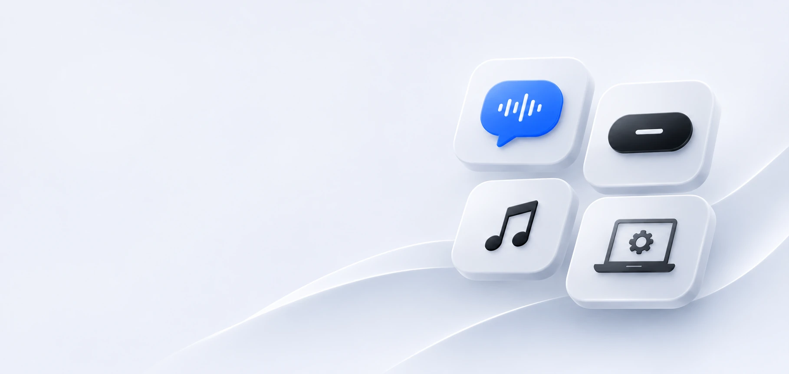

Đến các dự án
Phần mềm cho Windows
Một góc làm việc tốt hơn.
Trợ lý AI, âm nhạc và tiện ích Windows do erikpuw phát triển.
Khám phá dự án


Trợ lý chạy trên Windows, kết nối mô hình ngôn ngữ cục bộ để trò chuyện, tra cứu và thực hiện tác vụ.
- Nhận giọng nói và đọc câu trả lời bằng tiếng Việt.
- Tra cứu tài liệu cá nhân với kho tri thức cục bộ.
- Lưu lịch sử và phân quyền riêng cho từng người dùng.
Cần thiết lập mô hình AI và môi trường chạy. Xem hướng dẫn trong repository.
Một notch nhỏ trên desktop Windows, gom điều khiển nhạc và các thông tin thường dùng vào cùng một nơi.
- Xem bài đang phát và điều khiển trình nghe nhạc.
- Xem thời tiết, lịch và các tiện ích desktop.
- Mở rộng từ pill nhỏ gọn sang bảng tiện ích.
Khả năng điều khiển nhạc phụ thuộc trình phát và hỗ trợ media của Windows.
Trình nghe nhạc cho bộ sưu tập trên máy. Thêm tệp hoặc thư mục, tạo playlist và nghe theo cách của bạn.
- Thư viện nhạc và playlist, không di chuyển tệp gốc.
- Lời bài hát đồng bộ từ tệp LRC hoặc LRCLIB khi bật.
- Tích hợp phím media và kết nối với PUW Notch.
Nghe nhạc offline. Tìm lời qua LRCLIB cần mạng và chỉ hoạt động khi bạn bật.
Tiện ích viết bằng Rust cho laptop Lenovo Legion, LOQ và IdeaPad Gaming được hỗ trợ.
- Chuyển chế độ nguồn, theo dõi quạt và cảm biến.
- Quản lý sạc và xem thông tin sức khỏe pin.
- Điều khiển đèn, phím Fn và thao tác từ khay hệ thống.
Dự án không chính thức, không liên kết với Lenovo. Điều khiển phần cứng phụ thuộc máy và firmware; đọc hướng dẫn trước khi dùng.
Hình nền động tương tác cho Windows, viết bằng Rust. Cảnh Vườn nổi trên mây mang cây, hoa, mây và những chuyển động nhẹ lên desktop.
- Cảnh phản ứng theo chuột, thay đổi sáng và tối theo giờ địa phương.
- Tự tạm dừng khi màn hình bị che bởi cửa sổ phóng to, fullscreen, khóa máy hoặc tắt màn hình.
- Cài đặt Việt–Anh, tùy chọn giảm chuyển động và chạy cùng Windows.
Nút tải tự kiểm tra bản phát hành ổn định mới nhất trên GitHub Releases. Khi chưa có bản phát hành, nút sẽ giữ trạng thái chưa sẵn sàng.
Tiện ích thay đổi giao diện thanh taskbar trên Windows theo hướng tinh gọn và hiện đại.
Dự án đang được chuẩn bị để đưa lên GitHub. Thông tin chi tiết và bản tải ổn định sẽ tự động cập nhật khi phát hành trên GitHub Releases.